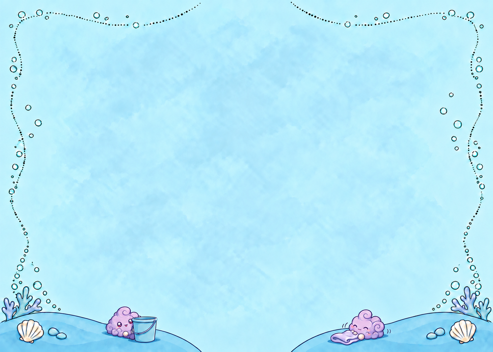
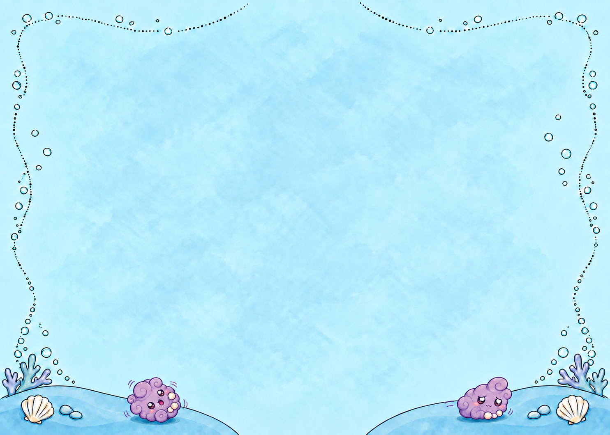
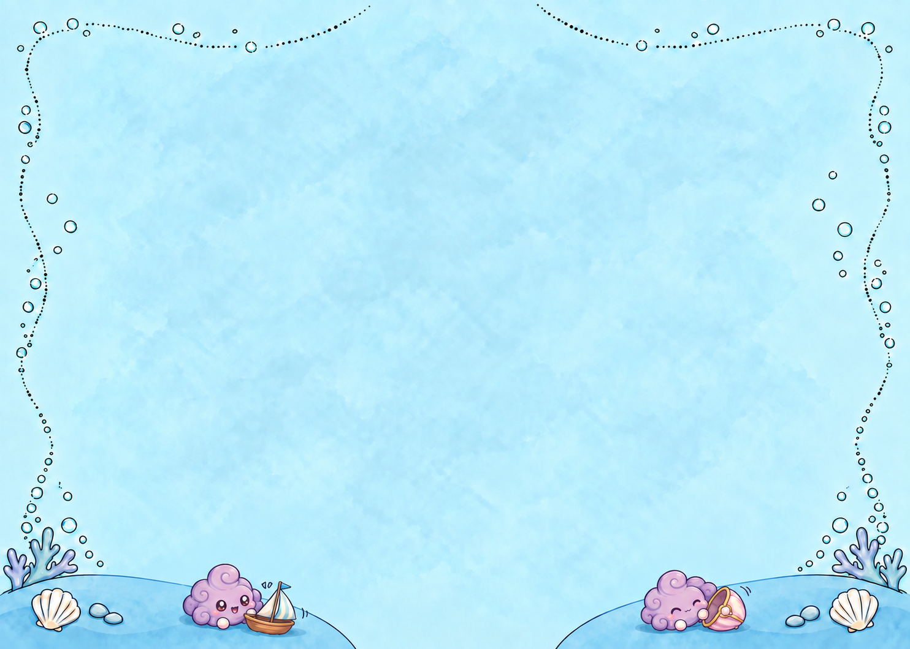
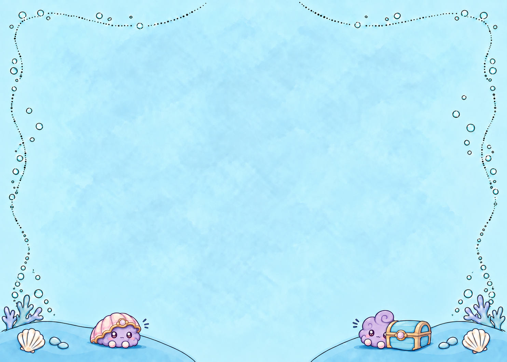
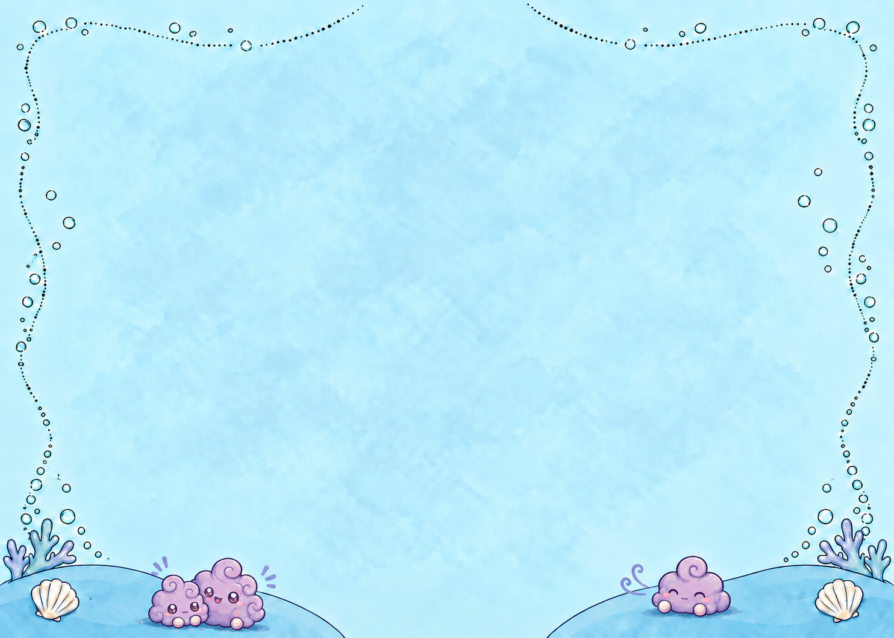
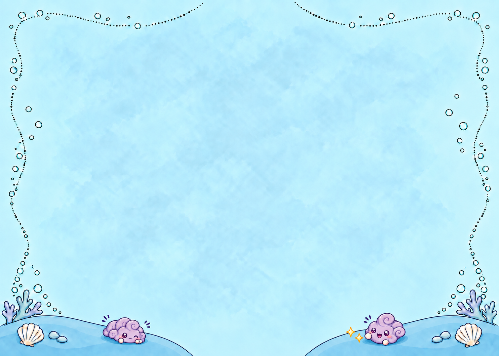
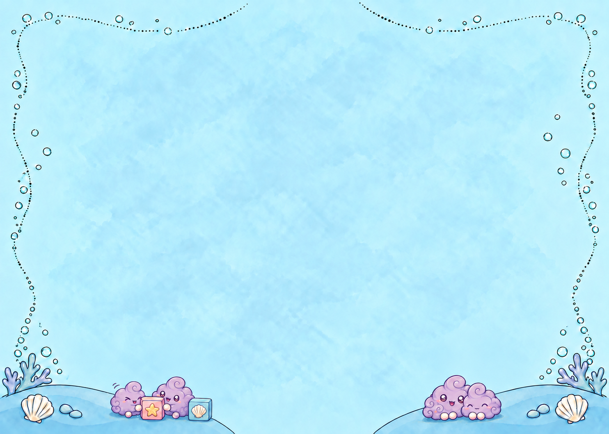

Direction and study review, not a rebuilt book. The current v13 PDF is unchanged. New studies below are unaccepted compositions. Revised drawings and child/owner comprehension review remain open.
Border art direction — small performances in the margins
Status: `SUPPORTING_CURRENT`; revised production brief, not accepted artwork. Owner direction 2026-09-20. [Binding design language](../DESIGN_LANGUAGE.md) governs. [Current rendered assignments](PAGE_PLAN.md) describe v13, not the proposal below.
What the borders do
The large illustration tells the event. The lower bank gives the reader a small second discovery: a reaction, an object left ready for use, or a tiny related activity. The original book's sleeping Baby Eagle is effective because its action belongs to the moment above it. We should borrow that relationship, rather than put a mascot in every corner.
The recurring dust bunnies are a supporting cast. Their sequence moves from curiosity, through being dislodged and making room, to play and cooperation. They do not narrate unseen game events or become named recurring individuals. Lavender bunnies remain lavender; the rainbow newcomer stays unique. No border may imply a second rescue, another transformation, or that Roshan has already completed an unfinished job.
An effective border can be described with one short verb phrase: **peeks at the tools**, **moves aside**, **shares a toy**, **listens**, **ducks**, **fits pieces together**. A collection of nouns is insufficient. An object-only border instead shows a clear state: bath things ready, rubbish collected, supplies ordered, toy offered.
Composition and drawing
- Use **one to three small bunnies total per page when bunnies are useful**. Zero is intentional on object-led and full-art pages. Three means a shared action, not three disconnected poses. Count the total across both banks.
- Give each border one dominant action. A quiet object or the native bank alone can balance the opposite side. Do not default to two equally busy banks. Alternate left-weighted, right-weighted, grouped, and open compositions.
- Broadness comes from horizontal relationships: a body leaning toward a prop, two figures attending to one activity, or a low row of ordered objects. Do not stretch figures or increase their individual size. Keep the central gap empty. Do not spread a small action so widely that its relationship disappears.
- Vary body silhouette, facing direction, distance, gaze and emotional energy. A changed eye expression on the same seated body is not a new composition. Use a compressed crouch, sideways roll, lean, or attentive upright pose. Preserve the established curls, scallops, pearl nubs and lavender identity; no human hands or costumes.
- Mix bunnies with meaningful story objects. Inventory existing source art first. Decorative inventions remain subordinate and must not masquerade as canonical game props. No treasure chest merely because a corner needs filling. No repeated brushes, suds, smudges or interchangeable stars.
- Keep the blue base, clear upper area, bottom-15% placement and individual 12% limits. Use simple broad color shapes, restrained texture and readable outlines. Ground contact follows the mound slope, with a shaped overlap and narrow shadow; no rectangular masking or hovering props.
- No decoration is enlarged to compete with the foreground. Check the actual 7 x 5 inch page, not only a magnified lower strip. If an action cannot be read at that size within the limits, simplify it or remove it.
- Preserve the two image treatments: full art or true foreground silhouettes. Native blue banks are a stationery layer, never a reason to insert cropped room fragments.
Page-by-page border score
Counts below concern marginal bunnies only, not characters in the main illustration. Placement is a proposal pending artwork and print-size inspection. No new frame generation is commissioned by this plan.
The thirteen reduced-page counts are **1, 0, 0, 0, 2, 3, 1, 0, 1, 0, 1, 2, 0**. These are planned, not a quota or an automatic quality score. Pages 24–26 deliberately progress **listen / pause / duck** rather than three nearly identical character groups.
Comprehension audit and revision history
This is an editorial self-review, not a child test or owner acceptance. Source evidence: original book reference page 28; v13 page contact sheets; seven generated bunny studies retained under `border_studies/`. Useful individual drawings are preserved without promoting their compositions.
**Desk-review result: revised direction is coherent enough to guide production; artwork execution remains OPEN.** The new plan supplies purpose, count, placement, exclusions and risks for every reduced page. It improves variety on paper; it has not demonstrated that all actions read in finished artwork.
Review cycle for each composition
1. Write what a non-reader should notice first in the main picture and second at the bottom. If the border explains a missing main event, repair the main event plan instead.
2. Inventory and choose the exact source objects and useful existing drawings. Record what is reusable and the specific new-pose/integration gap. Preserve originals and source hashes.
3. Make one composition, then inspect it at actual page size with its caption and foreground. Hide the caption for a second reading. Can the action be named without the production brief? Does gaze/contact make physical sense? Record the observed answer, not the intended one.
4. Compare against neighboring pages. Count bunnies, inspect pose/side/prop repetition, and check that no reveal appears early. Retain purposeful echoes; remove habitual filler.
5. Check silhouette, identity, ground contact, native resolution, lower-zone geometry, central gap and text hierarchy. Mechanical limits and visual comprehension are separate gates.
6. Record keep/revise/remove with evidence. Revise the failed composition and repeat. Store the reviewed plan, studies and findings on the dedicated book branch before another whole-story pass. Human/child comprehension and owner acceptance stay explicitly unperformed until actually obtained.
Production order: contrast a one-bunny listening page (24), the three-bunny shared play page (20), and object-only tidy page (22) first. These test whether the visual grammar has real variety. Then build remaining borders and audit the complete story, including all border-free pages. Do not batch-generate thirteen variants from one bilateral prompt.
Useful drawings, unresolved compositions
Page 4: composition not accepted
Useful pail peek; remove second bunny. One curious figure and a cloth alone.

Preserved drawing reference; not the revised page proposal.
Page 19: composition not accepted
Useful roll/scoot actions; retain two moving outward. Inspect against Eagle foreground.

Preserved drawing reference; not the revised page proposal.
Page 20: composition not accepted
Useful cup interaction; replace two separate activities with three figures sharing one cup activity.

Preserved drawing reference; not the revised page proposal.
Page 24: composition not accepted
Reject shell/chest premise. New listening pose needed; no arbitrary props.

Preserved drawing reference; not the revised page proposal.
Page 25: composition not accepted
Preserve individual expressions as studies only; final plan has no added border figures.

Preserved drawing reference; not the revised page proposal.
Page 26: composition not accepted
Useful compressed crouch; remove second figure and extra glints.

Preserved drawing reference; not the revised page proposal.
Page 31: composition not accepted
Four figures exceeds owner maximum. Preserve leaning poses; replace with two sharing one puzzle task.

Preserved drawing reference; not the revised page proposal.